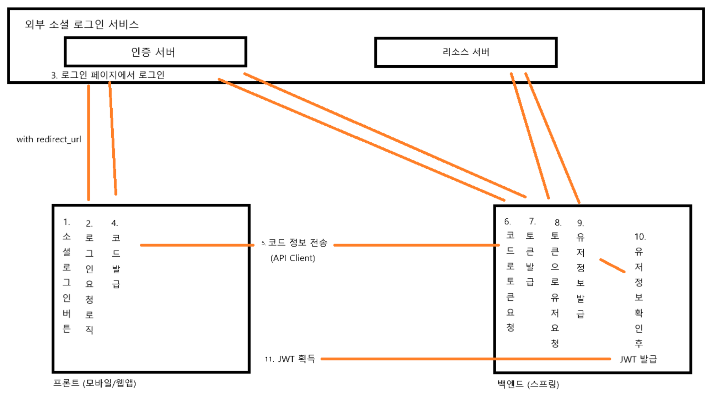

동작 원리와 프론트/백 책임 분배
OAuth2 Code Grant 방식의 동작 순서
- 로그인 페이지
- 성공 후 코드 발급 (redirect_url)
- 코드를 통해 Access 토큰 요청
- Access 토큰 발급 완료
- Access 토큰을 통해 유저 정보 요청
- 유저 정보 획득 완료
세션 방식에서 OAuth2 클라이언트 동작 원리
{kind=link}
세션 방식에서는 로직을 구성하는데 큰 고민 없이 진행할 수 있다. 로그인이 성공하면 세션을 생성하면 앞으로의 요청에 대해서도 사용자를 알아챌 수 있다.
JWT 방식에서 OAuth2 클라이언트 구성시 고민점
JWT 방식에서는 로그인(인증)이 성공하면 JWT 발급 문제와 웹/하이브리드/네이티브앱별 특징에 의해 OAuth2 Code Grant 방식 동작의 책임을 프론트엔드 측에 둘 것인지 백엔드 측에 둘 것인지 많은 고민을 한다.
- 로그인(인증)이 성공하면 JWT를 발급해야 하는 문제
- 프론트단에서 로그인 경로에 대한 하이퍼링크를 실행하면 소셜 로그인창이 등장하고 로그인 로직이 수행된다.
- 로그인이 성공되면 JWT가 발급되는데 하이퍼링크로 실행했기 때문에 JWT를 받을 로직이 없다. (해당 부분에 대해 redirect_url 설정에 따라 많은 고민이 필요합니다.)
- API Client(axios, fetch)로 요청 보내면 백엔드측으로 요청이 전송되지만 외부 서비스 로그인 페이지를 확인할 수 없다.
- 웹/하이브리드/네이티브앱별 특징
- 웹에서 편하게 사용할 수 있는 웹페이지가 앱에서는 웹뷰로 보이기 때문에 UX적으로 안좋은 경험을 가질 수 있다.
- 앱 환경에서 쿠키 소멸 현상
위와 같은 문제로 OAuth2 Code Grant 방식 동작에 대한 redirect_url, Access 토큰 발급 문제를 어느단에서 처리해야 하는지에 대한 구현이 많고 넷상에 잘못된 구현 방법도 많이 있다.
잘못된 구현 방법과 구현되어 있는 모든 방법을 아래에서 알아보자.
프론트/백 책임 분배
- 모든 책임을 프론트가 맡음
{kind=link}
프론트단에서 (로그인 → 코드 발급 → Access 토큰 → 유저 정보 획득) 과정을 모두 수행한 뒤 백엔드단에서 (유저 정보 → JWT 발급) 방식으로 주로 네이티브앱에서 사용하는 방식.
→ 프론트에서 보낸 유저 정보의 진위 여부를 따지기 위해 추가적인 보안 로직이 필요하다.
- 책임을 프론트와 백엔드가 나누어 가짐 : 잘못된 방식 (대부분의 웹 블로그가 이 방식으로 구현)
- 프론트단에서 (로그인 → 코드 발급) 후 코드를 백엔드로 전송 백엔드단에서 (코드 → 토큰 발급 → 유저 정보 획득 → JWT 발급)

{kind=link}
- 프론트단에서 (로그인 → 코드 발급 → Access 토큰) 후 Access 토큰을 백엔드로 전송 백엔드단에서 (Access 토큰 → 유저 정보 획득 → JWT 발급)
{kind=link}
카카오와 같은 대형 서비스 개발 포럼 및 보안 규격에서 위와 같은 코드/Access 토큰을 전송하는 방법을 지양함. (하지만 토이로 구현하기 쉬워 자주 사용한다.)
- 모든 책임을 백엔드가 맡음
{kind=link}
프론트단에서 백엔드의 OAuth2 로그인 경로로 하이퍼링킹을 진행 후 백엔드단에서 (로그인 페이지 요청 → 코드 발급 → Access 토큰 → 유저 정보 획득 → JWT 발급) 방식으로 주로 웹앱/모바일앱 통합 환경 서버에서 사용하는 방식.
→ 백엔드에서 JWT를 발급하는 방식의 고민과 프론트측에서 받는 로직을 처리해야 한다.
우리가 구현할 방식
우리 채널은 백엔드에 초점이 맞춰져 있기 때문에 모든 책임을 백엔드에서 맡아 (로그인 페이지 요청 → 코드 발급 → Access 토큰 → 유저 정보 획득 → JWT 발급)에 대한 로직을 모두 스프링 쪽에서 처리하도록 하겠습니다.
카카오 dev톡에 적혀 있는 프론트/백 책임 분배
구글링을 통해 카카오 dev 톡에 적혀 있는 프론트와 백엔드가 책임을 나눠 가지는 질문에 대한 카카오 공식 답변입니다.
{kind=link}
{kind=link}
앱에 대해서는 모든 책임을 프론트가 일임하고 코드나 Access 토큰을 전달하는 행위 자체를 지양합니다.
추가적으로 다른 자료들에도 코드나 Access 토큰을 전달하는 행위를 금지하고 있습니다.